Chapter 42: The Immune System¶
Introduction¶
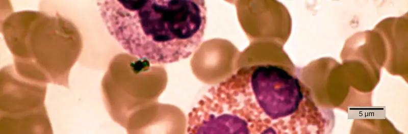
The environment consists of numerous pathogens, which are agents, usually microorganisms, that cause diseases in their hosts. A host is the organism that is invaded and often harmed by a pathogen. Pathogens include bacteria, protists, fungi and other infectious organisms. We are constantly exposed to pathogens in food and water, on surfaces, and in the air. Mammalian immune systems evolved for protection from such pathogens; they are composed of an extremely diverse array of specialized cells and soluble molecules that coordinate a rapid and flexible defense system capable of providing protection from a majority of these disease agents.
Components of the immune system constantly search the body for signs of pathogens. When pathogens are found, immune factors are mobilized to the site of an infection. The immune factors identify the nature of the pathogen, strengthen the corresponding cells and molecules to combat it efficiently, and then halt the immune response after the infection is cleared to avoid unnecessary host cell damage. The immune system can remember pathogens to which it has been exposed to create a more efficient response upon reexposure. This memory can last several decades. Features of the immune system, such as pathogen identification, specific response, amplification, retreat, and remembrance are essential for survival against pathogens. The immune response can be classified as either innate or adaptive. The innate immune response is always present and attempts to defend against all pathogens rather than focusing on specific ones. Conversely, the adaptive immune response stores information about past infections and mounts pathogen-specific defenses.
42.1 Innate Immune Response¶
Learning Objectives
By the end of this section, you will be able to do the following:
- Describe physical and chemical immune barriers
- Explain immediate and induced innate immune responses
- Discuss natural killer cells
- Describe major histocompatibility complex I molecules
- Summarize how the proteins in a complement system function to destroy extracellular pathogens
The immune system comprises both innate and adaptive immune responses. Innate immunity occurs naturally because of genetic factors or physiology; it is not induced by infection or vaccination but works to reduce the workload for the adaptive immune response. Both the innate and adaptive levels of the immune response involve secreted proteins, receptor-mediated signaling, and intricate cell-to-cell communication. The innate immune system developed early in animal evolution, roughly a billion years ago, as an essential response to infection. Innate immunity has a limited number of specific targets: any pathogenic threat triggers a consistent sequence of events that can identify the type of pathogen and either clear the infection independently or mobilize a highly specialized adaptive immune response. For example, tears and mucus secretions contain microbicidal factors.
Physical and Chemical Barriers¶
Before any immune factors are triggered, the skin functions as a continuous, impassable barrier to potentially infectious pathogens. Pathogens are killed or inactivated on the skin by desiccation (drying out) and by the skin’s acidity. In addition, beneficial microorganisms that coexist on the skin compete with invading pathogens, preventing infection. Regions of the body that are not protected by skin (such as the eyes and mucus membranes) have alternative methods of defense, such as tears and mucus secretions that trap and rinse away pathogens, and cilia in the nasal passages and respiratory tract that push the mucus with the pathogens out of the body. Throughout the body are other defenses, such as the low pH of the stomach (which inhibits the growth of pathogens), blood proteins that bind and disrupt bacterial cell membranes, and the process of urination (which flushes pathogens from the urinary tract).
Despite these barriers, pathogens may enter the body through skin abrasions or punctures, or by collecting on mucosal surfaces in large numbers that overcome the mucus or cilia. Some pathogens have evolved specific mechanisms that allow them to overcome physical and chemical barriers. When pathogens do enter the body, the innate immune system responds with inflammation, pathogen engulfment, and secretion of immune factors and proteins.
Pathogen Recognition¶
An infection may be intracellular or extracellular, depending on the pathogen. All viruses infect cells and replicate within those cells (intracellularly), whereas bacteria and other parasites may replicate intracellularly or extracellularly, depending on the species. The innate immune system must respond accordingly: by identifying the extracellular pathogen and/or by identifying host cells that have already been infected. When a pathogen enters the body, cells in the blood and lymph detect the specific pathogen-associated molecular patterns (PAMPs) on the pathogen’s surface. PAMPs are carbohydrate, polypeptide, and nucleic acid “signatures” that are expressed by viruses, bacteria, and parasites but which differ from molecules on host cells. The immune system has specific cells, described in Figure 42.2 and shown in Figure 42.3, with receptors that recognize these PAMPs. A macrophage is a large phagocytic cell that engulfs foreign particles and pathogens. Macrophages recognize PAMPs via complementary pattern recognition receptors (PRRs). PRRs are molecules on macrophages and dendritic cells which are in contact with the external environment. A monocyte is a type of white blood cell that circulates in the blood and lymph and differentiates into macrophages after it moves into infected tissue. Dendritic cells bind molecular signatures of pathogens and promote pathogen engulfment and destruction. Toll-like receptors (TLRs) are a type of PRR that recognizes molecules that are shared by pathogens but distinguishable from host molecules. TLRs are present in invertebrates as well as vertebrates, and appear to be one of the most ancient components of the immune system. TLRs have also been identified in the mammalian nervous system.
![Table shows various types of white blood cells and describes their function. Mast cells, natural killer cells, neutrophils, basophils and eosinophils are all filled with granules and have a horseshoe-shaped nucleus. Monocytes are similar in overal horseshoe-shape but without the granules inside. Macrophages are irregular in shape, with a round nucleus. Dendrites have star-like projections and a small horseshoe shaped nucleus. Mast cells dilate blood vessels and induce inflammation through release of histamines and heparin. They also recruit macrophages and neutrophils, and are involved in wound healing and defense against pathogens, but can also be responsible for allergic reactions. They are found in connective tissue and mucous membranes. Macrophages are phagocytic cells that consume foreign pathogens and cancer cells. They stimulate response of other immune cells and migrate from blood vessels into tissues. Natural killer cells kill tumor cells and virus-infected cells. They circulate in blood and migrate into tissues. Dendritic cells present antigens on their surface, thereby triggering adaptive immunity. They are present in tissues in epithelial tissue, including skin, lung and tissues of the digestive tract. They migrate to lymph nodes upon activation. Monocytes differentiate into macrophages and dendritic cells in response to inflammation. They are stored in spleen, and move through blood vessels to infected tissues. Neutrophils are first responders at the site of infection or trauma. These abundant phagocytic cell represent 50-60% of all leukocytes. They release toxins that kill or inhibit bacteria and fungi and recruit other immune cells to the site of infection. They migrate from blood vessels into tissues. Basophils are responsible for defense against parasites. They release histamines that cause inflammation and may be responsible for allergic reactions. They circulate in blood and migrate to tissues. Eosinophils release toxins that kill bacteria and parasites but also cause tissue damage. They circulate in blood and migrate to tissues.](img/figure-42-01-01.webp)
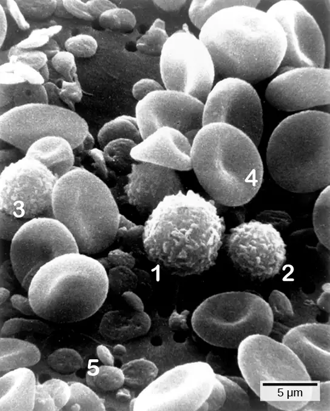
Cytokine Release Effect¶
The binding of PRRs with PAMPs triggers the release of cytokines, which signal that a pathogen is present and needs to be destroyed along with any infected cells. A cytokine is a chemical messenger that regulates cell differentiation (form and function), proliferation (production), and gene expression to affect immune responses. At least 40 types of cytokines exist in humans that differ in terms of the cell type that produces them, the cell type that responds to them, and the changes they produce. One type of cytokine, interferon, is illustrated in Figure 42.4.
One subclass of cytokines is the interleukin (IL), so named because they mediate interactions between leukocytes (white blood cells). Interleukins are involved in bridging the innate and adaptive immune responses. In addition to being released from cells after PAMP recognition, cytokines are released by the infected cells which bind to nearby uninfected cells and induce those cells to release cytokines, which results in a cytokine burst.
A second class of early-acting cytokines is interferons, which are released by infected cells as a warning to nearby uninfected cells. One of the functions of an interferon is to inhibit viral replication. They also have other important functions, such as tumor surveillance. Interferons work by signaling neighboring uninfected cells to destroy RNA and reduce protein synthesis, signaling neighboring infected cells to undergo apoptosis (programmed cell death), and activating immune cells.
In response to interferons, uninfected cells alter their gene expression, which increases the cells’ resistance to infection. One effect of interferon-induced gene expression is a sharply reduced cellular protein synthesis. Virally infected cells produce more viruses by synthesizing large quantities of viral proteins. Thus, by reducing protein synthesis, a cell becomes resistant to viral infection.
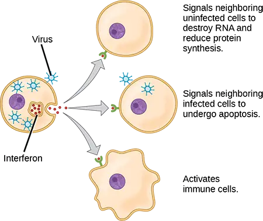
Phagocytosis and Inflammation¶
The first cytokines to be produced are pro-inflammatory; that is, they encourage inflammation, the localized redness, swelling, heat, and pain that result from the movement of leukocytes and fluid through increasingly permeable capillaries to a site of infection. The population of leukocytes that arrives at an infection site depends on the nature of the infecting pathogen. Both macrophages and dendritic cells engulf pathogens and cellular debris through phagocytosis. A neutrophil is also a phagocytic leukocyte that engulfs and digests pathogens. Neutrophils, shown in Figure 42.3, are the most abundant leukocytes of the immune system. Neutrophils have a nucleus with two to five lobes, and they contain organelles, called lysosomes, that digest engulfed pathogens. An eosinophil is a leukocyte that works with other eosinophils to surround a parasite; it is involved in the allergic response and in protection against helminthes (parasitic worms).
Neutrophils and eosinophils are particularly important leukocytes that engulf large pathogens, such as bacteria and fungi. A mast cell is a leukocyte that produces inflammatory molecules, such as histamine, in response to large pathogens. A basophil is a leukocyte that, like a neutrophil, releases chemicals to stimulate the inflammatory response as illustrated in Figure 42.5. Basophils are also involved in allergy and hypersensitivity responses and induce specific types of inflammatory responses. Eosinophils and basophils produce additional inflammatory mediators to recruit more leukocytes. A hypersensitive immune response to harmless antigens, such as in pollen, often involves the release of histamine by basophils and mast cells.
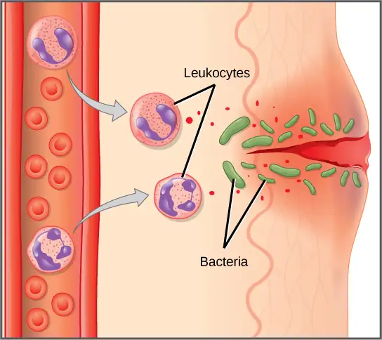
Cytokines also send feedback to cells of the nervous system to bring about the overall symptoms of feeling sick, which include lethargy, muscle pain, and nausea. These effects may have evolved because the symptoms encourage the individual to rest and prevent the spreading of the infection to others. Cytokines also increase the core body temperature, causing a fever, which causes the liver to withhold iron from the blood. Without iron, certain pathogens, such as some bacteria, are unable to replicate; this is called nutritional immunity.
Interactive
Watch this 23-second stop-motion video showing a neutrophil that searches for and engulfs fungus spores during an elapsed time of about 79 minutes.
Natural Killer Cells¶
Lymphocytes are leukocytes that are histologically identifiable by their large, darkly staining nuclei; they are small cells with very little cytoplasm, as shown in Figure 42.6. Infected cells are identified and destroyed by natural killer (NK) cells, lymphocytes that can kill cells infected with viruses or tumor cells (abnormal cells that uncontrollably divide and invade other tissue). T cells and B cells of the adaptive immune system also are classified as lymphocytes. T cells are lymphocytes that mature in the thymus gland, and B cells are lymphocytes that mature in the bone marrow. NK cells identify intracellular infections, especially from viruses, by the altered expression of major histocompatibility complex (MHC) I molecules on the surface of infected cells. MHC I molecules are proteins on the surfaces of all nucleated cells, thus they are scarce on red blood cells and platelets which are non-nucleated. The function of MHC I molecules is to display fragments of proteins from the infectious agents within the cell to T cells; healthy cells will be ignored, while “non-self” or foreign proteins will be attacked by the immune system. MHC II molecules are found mainly on cells containing antigens (“non-self proteins”) and on lymphocytes. MHC II molecules interact with helper T cells to trigger the appropriate immune response, which may include the inflammatory response.
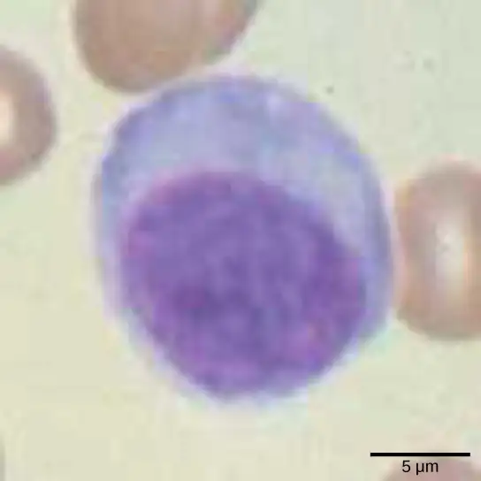
An infected cell (or a tumor cell) is usually incapable of synthesizing and displaying MHC I molecules appropriately. The metabolic resources of cells infected by some viruses produce proteins that interfere with MHC I processing and/or trafficking to the cell surface. The reduced MHC I on host cells varies from virus to virus and results from active inhibitors being produced by the viruses. This process can deplete host MHC I molecules on the cell surface, which NK cells detect as “unhealthy” or “abnormal” while searching for cellular MHC I molecules. Similarly, the dramatically altered gene expression of tumor cells leads to expression of extremely deformed or absent MHC I molecules that also signal “unhealthy” or “abnormal.”
NK cells are always active; an interaction with normal, intact MHC I molecules on a healthy cell disables the killing sequence, and the NK cell moves on. After the NK cell detects an infected or tumor cell, its cytoplasm secretes granules comprised of perforin, a destructive protein that creates a pore in the target cell. Granzymes are released along with the perforin in the immunological synapse. A granzyme is a protease that digests cellular proteins and induces the target cell to undergo programmed cell death, or apoptosis. Phagocytic cells then digest the cell debris left behind. NK cells are constantly patrolling the body and are an effective mechanism for controlling potential infections and preventing cancer progression.
Complement¶
An array of approximately 20 types of soluble proteins, called a complement system, functions to destroy extracellular pathogens. Cells of the liver and macrophages synthesize complement proteins continuously; these proteins are abundant in the blood serum and are capable of responding immediately to infecting microorganisms. The complement system is so named because it is complementary to the antibody response of the adaptive immune system. Complement proteins bind to the surfaces of microorganisms and are particularly attracted to pathogens that are already bound by antibodies. Binding of complement proteins occurs in a specific and highly regulated sequence, with each successive protein being activated by cleavage and/or structural changes induced upon binding of the preceding protein(s). After the first few complement proteins bind, a cascade of sequential binding events follows in which the pathogen rapidly becomes coated in complement proteins.
Complement proteins perform several functions. The proteins serve as a marker to indicate the presence of a pathogen to phagocytic cells, such as macrophages and B cells, and enhance engulfment; this process is called opsonization. Certain complement proteins can combine to form attack complexes that open pores in microbial cell membranes. These structures destroy pathogens by causing their contents to leak, as illustrated in Figure 42.7.
![Illustration shows an invading pathogen with an antigen on its surface. In the classic pathway for complement activation, host antibodies bind the antigen, and C 1 binds the antibody. The C 1-antibody complex causes C 2 and C 4 each to split in two. Fragments from C 2 and C 4 each joins together to form an enzyme called C 3 convertase. C 3 convertase splits C 3 in two. One of the fragments from C 3 joins C 3 convertase to form C 5 convertase. C 5 convertase splits C 5 in two. A fragment from C 5 joins C 6, C 7, C 8, and C 9 to form a complex that makes a hole in the plasma membrane for the invading cell. The cell swells and bursts. In the alternative pathway, C 3 convertase spontaneously splits C 3 in two and the rest of the pathway proceeds the same as the classic pathway. Host cells are protected from complement by the presence of endogenous proteins.](img/figure-b42-01-06.webp)
42.2 Adaptive Immune Response¶
Learning Objectives
By the end of this section, you will be able to do the following:
- Explain adaptive immunity
- Compare and contrast adaptive and innate immunity
- Describe cell-mediated immune response and humoral immune response
- Describe immune tolerance
The adaptive, or acquired, immune response takes days or even weeks to become established—much longer than the innate response; however, adaptive immunity is more specific to pathogens and has memory. Adaptive immunity is an immunity that occurs after exposure to an antigen either from a pathogen or a vaccination. This part of the immune system is activated when the innate immune response is insufficient to control an infection. In fact, without information from the innate immune system, the adaptive response could not be mobilized. There are two types of adaptive responses: the cell-mediated immune response, which is carried out by T cells, and the humoral immune response, which is controlled by activated B cells and antibodies. Activated T cells and B cells that are specific to molecular structures on the pathogen proliferate and attack the invading pathogen. Their attack can kill pathogens directly or secrete antibodies that enhance the phagocytosis of pathogens and disrupt the infection. Adaptive immunity also involves a memory to provide the host with long-term protection from reinfection with the same type of pathogen; on reexposure, this memory will facilitate an efficient and quick response.
Antigen-presenting Cells¶
Unlike NK cells of the innate immune system, B cells (B lymphocytes) are a type of white blood cell that gives rise to antibodies, whereas T cells (T lymphocytes) are a type of white blood cell that plays an important role in the immune response. T cells are a key component in the cell-mediated response—the specific immune response that utilizes T cells to neutralize cells that have been infected with viruses and certain bacteria. There are three types of T cells: cytotoxic, helper, and suppressor T cells. Cytotoxic T cells destroy virus-infected cells in the cell-mediated immune response, and helper T cells play a part in activating both the antibody and the cell-mediated immune responses. Suppressor T cells deactivate T cells and B cells when needed, and thus prevent the immune response from becoming too intense.
An antigen is a foreign or “non-self” macromolecule that reacts with cells of the immune system. Not all antigens will provoke a response. For instance, individuals produce innumerable “self” antigens and are constantly exposed to harmless foreign antigens, such as food proteins, pollen, or dust components. The suppression of immune responses to harmless macromolecules is highly regulated and typically prevents processes that could be damaging to the host, known as tolerance.
The innate immune system contains cells that detect potentially harmful antigens, and then inform the adaptive immune response about the presence of these antigens. An antigen-presenting cell (APC) is an immune cell that detects, engulfs, and informs the adaptive immune response about an infection. When a pathogen is detected, these APCs will phagocytose the pathogen and digest it to form many different fragments of the antigen. Antigen fragments will then be transported to the surface of the APC, where they will serve as an indicator to other immune cells. Dendritic cells are immune cells that process antigen material; they are present in the skin (Langerhans cells) and the lining of the nose, lungs, stomach, and intestines. Sometimes a dendritic cell presents on the surface of other cells to induce an immune response, thus functioning as an antigen-presenting cell. Macrophages also function as APCs. Before activation and differentiation, B cells can also function as APCs.
After phagocytosis by APCs, the phagocytic vesicle fuses with an intracellular lysosome forming phagolysosome. Within the phagolysosome, the components are broken down into fragments; the fragments are then loaded onto MHC class I or MHC class II molecules and are transported to the cell surface for antigen presentation, as illustrated in Figure 42.8. Note that T lymphocytes cannot properly respond to the antigen unless it is processed and embedded in an MHC II molecule. APCs express MHC on their surfaces, and when combined with a foreign antigen, these complexes signal a “non-self” invader. Once the fragment of antigen is embedded in the MHC II molecule, the immune cell can respond. Helper T cells are one of the main lymphocytes that respond to antigen-presenting cells. Recall that all other nucleated cells of the body expressed MHC I molecules, which signal “healthy” or “normal.”
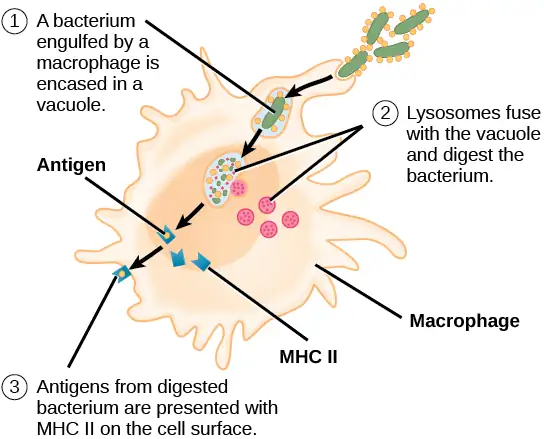
Interactive
This animation from Rockefeller University shows how dendritic cells act as sentinels in the body's immune system.
T and B Lymphocytes¶
Lymphocytes in human circulating blood are approximately 80 to 90 percent T cells, shown in Figure 42.9, and 10 to 20 percent B cells. Recall that the T cells are involved in the cell-mediated immune response, whereas B cells are part of the humoral immune response.
T cells encompass a heterogeneous population of cells with extremely diverse functions. Some T cells respond to APCs of the innate immune system, and indirectly induce immune responses by releasing cytokines. Other T cells stimulate B cells to prepare their own response. Another population of T cells detects APC signals and directly kills the infected cells. Other T cells are involved in suppressing inappropriate immune reactions to harmless or “self” antigens.
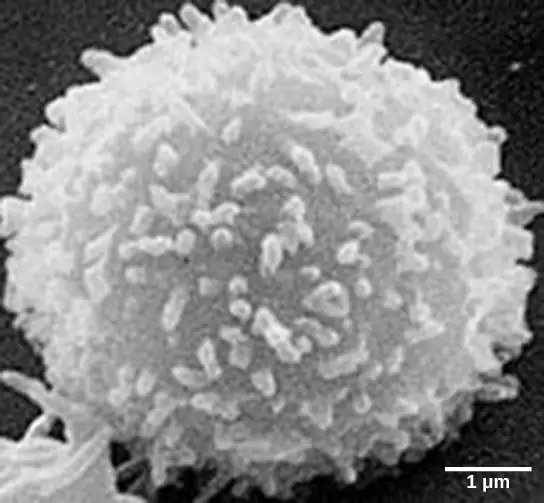
T and B cells exhibit a common theme of recognition/binding of specific antigens via a complementary receptor, followed by activation and self-amplification/maturation to specifically bind to the particular antigen of the infecting pathogen. T and B lymphocytes are also similar in that each cell only expresses one type of antigen receptor. Any individual may possess a population of T and B cells that together express a near limitless variety of antigen receptors that are capable of recognizing virtually any infecting pathogen. T and B cells are activated when they recognize small components of antigens, called epitopes, presented by APCs, illustrated in Figure 42.10. Note that recognition occurs at a specific epitope rather than on the entire antigen; for this reason, epitopes are known as “antigenic determinants.” In the absence of information from APCs, T and B cells remain inactive, or naïve, and are unable to prepare an immune response. The requirement for information from the APCs of innate immunity to trigger B cell or T cell activation illustrates the essential nature of the innate immune response to the functioning of the entire immune system.
Naïve T cells can express one of two different molecules, CD4 or CD8, on their surface, as shown in Figure 42.11, and are accordingly classified as CD4+ or CD8+ cells. These molecules are important because they regulate how a T cell will interact with and respond to an APC. Naïve CD4+ cells bind APCs via their antigen-embedded MHC II molecules and are stimulated to become helper T (TH) lymphocytes, cells that go on to stimulate B cells (or cytotoxic T cells) directly or secrete cytokines to inform more and various target cells about the pathogenic threat. In contrast, CD8+ cells engage antigen-embedded MHC I molecules on APCs and are stimulated to become cytotoxic T lymphocytes (CTLs), which directly kill infected cells by apoptosis and emit cytokines to amplify the immune response. The two populations of T cells have different mechanisms of immune protection, but both bind MHC molecules via their antigen receptors called T cell receptors (TCRs). The CD4 or CD8 surface molecules differentiate whether the TCR will engage an MHC II or an MHC I molecule. Because they assist in binding specificity, the CD4 and CD8 molecules are described as coreceptors.
Visual Connection
![Illustration shows activation of a C D 4 plus helper T cell. An antigen-presenting cell digests a pathogen. Epitopes from this pathogen are presented in conjunction with M H C I I molecules on the cell surface. A T cell receptor and a C D 8 receptor, both on the surface of the T cell, bind the M H C I I epitope complex. As a result, the helper T cell becomes activated and both the helper T cell and antigen-presenting cell release cytokines. The cytokines induce the helper T cell to clone itself. The cloned helper T cells release different cytokines that activate B cells and C D 8 plus T cells, turning them into cytotoxic T cells. The cytotoxic T cell binds the M H C I epitope complex on an infected cell. The cytotoxic T cell then releases perforin molecules, which form a pore in the plasma membrane, and granzymes, which break down proteins, killing the cell.](img/figure-b42-02-04.webp)
Which of the following statements about T cells is false?
- Helper T cells release cytokines while cytotoxic T cells kill the infected cell.
- Helper T cells are CD4+, while cytotoxic T cells are CD8+.
- MHC II is a receptor found on most body cells, while MHC I is a receptor found on immune cells only.
- The T cell receptor is found on both CD4+ and CD8+ T cells.
Consider the innumerable possible antigens that an individual will be exposed to during a lifetime. The mammalian adaptive immune system is adept in responding appropriately to each antigen. Mammals have an enormous diversity of T cell populations, resulting from the diversity of TCRs. Each TCR consists of two polypeptide chains that span the T cell membrane, as illustrated in Figure 42.12; the chains are linked by a disulfide bridge. Each polypeptide chain is comprised of a constant domain and a variable domain: a domain, in this sense, is a specific region of a protein that may be regulatory or structural. The intracellular domain is involved in intracellular signaling. A single T cell will express thousands of identical copies of one specific TCR variant on its cell surface. The specificity of the adaptive immune system occurs because it synthesizes millions of different T cell populations, each expressing a TCR that differs in its variable domain. This TCR diversity is achieved by the mutation and recombination of genes that encode these receptors in stem cell precursors of T cells. The binding between an antigen-displaying MHC molecule and a complementary TCR “match” indicates that the adaptive immune system needs to activate and produce that specific T cell because its structure is appropriate to recognize and destroy the invading pathogen.
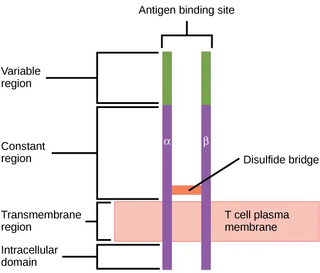
Helper T Lymphocytes¶
The TH lymphocytes function indirectly to identify potential pathogens for other cells of the immune system. These cells are important for extracellular infections, such as those caused by certain bacteria, helminths, and protozoa. THlymphocytes recognize specific antigens displayed in the MHC II complexes of APCs. There are two major populations of TH cells: TH1 and TH2. TH1 cells secrete cytokines to enhance the activities of macrophages and other T cells. TH1 cells activate the action of cytotoxic T cells, as well as macrophages. TH2 cells stimulate naïve B cells to destroy foreign invaders via antibody secretion. Whether a TH1 or a TH2 immune response develops depends on the specific types of cytokines secreted by cells of the innate immune system, which in turn depends on the nature of the invading pathogen.
The TH1-mediated response involves macrophages and is associated with inflammation. Recall the frontline defenses of macrophages involved in the innate immune response. Some intracellular bacteria, such as Mycobacterium tuberculosis, have evolved to multiply in macrophages after they have been engulfed. These pathogens evade attempts by macrophages to destroy and digest the pathogen. When M. tuberculosis infection occurs, macrophages can stimulate naïve T cells to become TH1 cells. These stimulated T cells secrete specific cytokines that send feedback to the macrophage to stimulate its digestive capabilities and allow it to destroy the colonizing M. tuberculosis. In the same manner, TH1-activated macrophages also become better suited to ingest and kill tumor cells. In summary; TH1 responses are directed toward intracellular invaders while TH2 responses are aimed at those that are extracellular.
B Lymphocytes¶
When stimulated by the TH2 pathway, naïve B cells differentiate into antibody-secreting plasma cells. A plasma cell is an immune cell that secrets antibodies; these cells arise from B cells that were stimulated by antigens. Similar to T cells, naïve B cells initially are coated in thousands of B cell receptors (BCRs), which are membrane-bound forms of Ig (immunoglobulin, or an antibody). The B cell receptor has two heavy chains and two light chains connected by disulfide linkages. Each chain has a constant and a variable region; the latter is involved in antigen binding. Two other membrane proteins, Ig alpha and Ig beta, are involved in signaling. The receptors of any particular B cell, as shown in Figure 42.13 are all the same, but the hundreds of millions of different B cells in an individual have distinct recognition domains that contribute to extensive diversity in the types of molecular structures to which they can bind. In this state, B cells function as APCs. They bind and engulf foreign antigens via their BCRs and then display processed antigens in the context of MHC II molecules to TH2 cells. When a TH2 cell detects that a B cell is bound to a relevant antigen, it secretes specific cytokines that induce the B cell to proliferate rapidly, which makes thousands of identical (clonal) copies of it, and then it synthesizes and secretes antibodies with the same antigen recognition pattern as the BCRs. The activation of B cells corresponding to one specific BCR variant and the dramatic proliferation of that variant is known as clonal selection. This phenomenon drastically, but briefly, changes the proportions of BCR variants expressed by the immune system, and shifts the balance toward BCRs specific to the infecting pathogen.
![Illustration shows a B cell receptor that has two column-like subunits, called heavy chains, projecting up from the plasma membrane. Each column bends away from the other about halfway up, resulting in a Y-shaped structure. Two shorter subunits, called light chains, join the heavy chains after the bend. The upper portion of both the light and heavy chains is the variable region that makes up the antigen binding site. The bottom of both light and heavy chains forms the constant region. The signal transduction region consists of two proteins, I g beta and I g alpha, embedded in the plasma membrane, with projections on the cytoplasmic side.](img/figure-42-02-06.webp)
T and B cells differ in one fundamental way: whereas T cells bind antigens that have been digested and embedded in MHC molecules by APCs, B cells function as APCs that bind intact antigens that have not been processed. Although T and B cells both react with molecules that are termed “antigens,” these lymphocytes actually respond to very different types of molecules. B cells must be able to bind intact antigens because they secrete antibodies that must recognize the pathogen directly, rather than digested remnants of the pathogen. Bacterial carbohydrate and lipid molecules can activate B cells independently from the T cells.
Cytotoxic T Lymphocytes¶
CTLs, a subclass of T cells, function to clear infections directly. The cell-mediated part of the adaptive immune system consists of CTLs that attack and destroy infected cells. CTLs are particularly important in protecting against viral infections; this is because viruses replicate within cells where they are shielded from extracellular contact with circulating antibodies. When APCs phagocytize pathogens and present MHC I-embedded antigens to naïve CD8+ T cells that express complementary TCRs, the CD8+ T cells become activated to proliferate according to clonal selection. These resulting CTLs then identify non-APCs displaying the same MHC I-embedded antigens (for example, viral proteins)—for example, the CTLs identify infected host cells.
Intracellularly, infected cells typically die after the infecting pathogen replicates to a sufficient concentration and lyses the cell, as many viruses do. CTLs attempt to identify and destroy infected cells before the pathogen can replicate and escape, thereby halting the progression of intracellular infections. CTLs also support NK lymphocytes to destroy early cancers. Cytokines secreted by the TH1 response that stimulates macrophages also stimulate CTLs and enhance their ability to identify and destroy infected cells and tumors.
CTLs sense MHC I-embedded antigens by directly interacting with infected cells via their TCRs. Binding of TCRs with antigens activates CTLs to release perforin and granzyme, degradative enzymes that will induce apoptosis of the infected cell. Recall that this is a similar destruction mechanism to that used by NK cells. In this process, the CTL does not become infected and is not harmed by the secretion of perforin and granzymes. In fact, the functions of NK cells and CTLs are complementary and maximize the removal of infected cells, as illustrated in Figure 42.14. If the NK cell cannot identify the “missing self” pattern of down-regulated MHC I molecules, then the CTL can identify it by the complex of MHC I with foreign antigens, which signals “altered self.” Similarly, if the CTL cannot detect antigen-embedded MHC I because the receptors are depleted from the cell surface, NK cells will destroy the cell instead. CTLs also emit cytokines, such as interferons, that alter surface protein expression in other infected cells, such that the infected cells can be easily identified and destroyed. Moreover, these interferons can also prevent virally infected cells from releasing virus particles.
Visual Connection
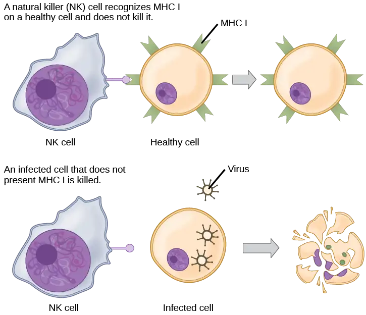
Based on what you know about MHC receptors, why do you think an organ transplanted from an incompatible donor to a recipient will be rejected?
Plasma cells and CTLs are collectively called effector cells: they represent differentiated versions of their naïve counterparts, and they are involved in bringing about the immune defense of killing pathogens and infected host cells.
Mucosal Surfaces and Immune Tolerance¶
The innate and adaptive immune responses discussed thus far comprise the systemic immune system (affecting the whole body), which is distinct from the mucosal immune system. Mucosal immunity is formed by mucosa-associated lymphoid tissue, which functions independently of the systemic immune system, and which has its own innate and adaptive components. Mucosa-associated lymphoid tissue (MALT), illustrated in Figure 42.15, is a collection of lymphatic tissue that combines with epithelial tissue lining the mucosa throughout the body. This tissue functions as the immune barrier and response in areas of the body with direct contact to the external environment. The systemic and mucosal immune systems use many of the same cell types. Foreign particles that make their way to MALT are taken up by absorptive epithelial cells called M cells and delivered to APCs located directly below the mucosal tissue. M cells function in the transport described, and are located in the Peyer’s patch, a lymphoid nodule. APCs of the mucosal immune system are primarily dendritic cells, with B cells and macrophages having minor roles. Processed antigens displayed on APCs are detected by T cells in the MALT and at various mucosal induction sites, such as the tonsils, adenoids, appendix, or the mesenteric lymph nodes of the intestine. Activated T cells then migrate through the lymphatic system and into the circulatory system to mucosal sites of infection.
![The intestine is lined with epithelial cells with hair-like cilia extending into the intestinal lumen. M cells are sandwiched between these epithelial cells, in bump-like projections in the intestinal lining. The M cells are shaped like an upside-down U, with the U forming a pocket on the interior surface. Antigens are taken up from the intestinal lumen by the M cells, and excreted into this U-shaped pocket. Dendritic cells in the pocket ingest the antigen, then migrate to an area below of the intestinal lining called a Peyer's patch. The dendritic cells, T cells and B cells aggregate to form clumps of cells called organized lymphoid follicles. There, some T cells interact with antigen associated with M H C I I on the surface of the dendritic cells. Some B cells are activated by free antigen. Some antigen-presenting dendritic cells enter the lymphatic system, where more B and T cells are activated in the lymph nodes. The B cells and T cells return to bigger bumps in the intestinal epithelium called MALT effector sites. Antibodies are secreted into the intestinal lumen.](img/figure-42-02-08.webp)
MALT is a crucial component of a functional immune system because mucosal surfaces, such as the nasal passages, are the first tissues onto which inhaled or ingested pathogens are deposited. The mucosal tissue includes the mouth, pharynx, and esophagus, and the gastrointestinal, respiratory, and urogenital tracts.
The immune system has to be regulated to prevent wasteful, unnecessary responses to harmless substances, and more importantly so that it does not attack “self.” The acquired ability to prevent an unnecessary or harmful immune response to a detected foreign substance known not to cause disease is described as immune tolerance. Immune tolerance is crucial for maintaining mucosal homeostasis given the tremendous number of foreign substances (such as food proteins) that APCs of the oral cavity, pharynx, and gastrointestinal mucosa encounter. Immune tolerance is brought about by specialized APCs in the liver, lymph nodes, small intestine, and lung that present harmless antigens to an exceptionally diverse population of regulatory T (Treg) cells, specialized lymphocytes that suppress local inflammation and inhibit the secretion of stimulatory immune factors. The combined result of Treg cells is to prevent immunologic activation and inflammation in undesired tissue compartments and to allow the immune system to focus on pathogens instead. In addition to promoting immune tolerance of harmless antigens, other subsets of Treg cells are involved in the prevention of the autoimmune response, which is an inappropriate immune response to host cells or self-antigens. Another Treg class suppresses immune responses to harmful pathogens after the infection has cleared to minimize host cell damage induced by inflammation and cell lysis.
Immunological Memory¶
The adaptive immune system possesses a memory component that allows for an efficient and dramatic response upon reinvasion of the same pathogen. Memory is handled by the adaptive immune system with little reliance on cues from the innate response. During the adaptive immune response to a pathogen that has not been encountered before, called a primary response, plasma cells secreting antibodies and differentiated T cells increase, then plateau over time. As B and T cells mature into effector cells, a subset of the naïve populations differentiates into B and T memory cells with the same antigen specificities, as illustrated in Figure 42.16.
A memory cell is an antigen-specific B or T lymphocyte that does not differentiate into effector cells during the primary immune response, but that can immediately become effector cells upon reexposure to the same pathogen. During the primary immune response, memory cells do not respond to antigens and do not contribute to host defenses. As the infection is cleared and pathogenic stimuli subside, the effectors are no longer needed, and they undergo apoptosis. In contrast, the memory cells persist in the circulation.
Visual Connection
![llustration shows activation of a B cell. An antigen on the surface of a bacterium binds the B cell receptor. The b cell engulfs the antigen, and presents an epitope on its surface in conjunction with a M H C I I receptor. A T cell receptor and C D 4 molecule on the surface of a helper T cell recognize the epitopes M H C I I complex and activates the B cell. The B cell divides and turns into memory B cells and plasma cells. Memory B cells detect the antigen that had activated their parent B cell (memory B cells and their parent B cells share the same BCR, thus they detect the same antigen) and can initiate rapid division and strong response if the same antigen is detected after infection at a different time. Plasma B cells secrete antibodies.](img/figure-42-02-09.webp)
The Rh antigen is found on Rh-positive red blood cells. A pregnant Rh-negative person can usually carry an Rh-positive fetus to term without difficulty. However, having a second Rh-positive fetus may trigger an immune attack that causes hemolytic disease of the newborn. Why do you think hemolytic disease is only a problem during the second or subsequent pregnancies?
If the pathogen is never encountered again during the individual’s lifetime, B and T memory cells will circulate for a few years or even several decades and will gradually die off, having never functioned as effector cells. However, if the host is reexposed to the same pathogen type, circulating memory cells will immediately differentiate into plasma cells and CTLs without input from APCs or TH cells. One reason the adaptive immune response is delayed is because it takes time for naïve B and T cells with the appropriate antigen specificities to be identified and activated. Upon reinfection, this step is skipped, and the result is a more rapid production of immune defenses. Memory B cells that differentiate into plasma cells output tens to hundreds-fold greater antibody amounts than were secreted during the primary response, as the graph in Figure 42.17 illustrates. This rapid and dramatic antibody response may stop the infection before it can even become established, and the individual may not realize they had been exposed.
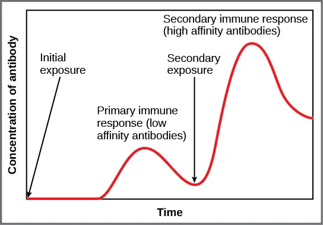
Vaccination is based on the knowledge that exposure to noninfectious antigens, derived from known pathogens, generates a mild primary immune response. The immune response to vaccination may not be perceived by the host as illness but still confers immune memory. When exposed to the corresponding pathogen to which an individual was vaccinated, the reaction is similar to a secondary exposure. Because each reinfection generates more memory cells and increased resistance to the pathogen, and because some memory cells die, certain vaccine courses involve one or more booster vaccinations to mimic repeat exposures: for instance, tetanus boosters are necessary every ten years because the memory cells only live that long.
Mucosal Immune Memory¶
A subset of T and B cells of the mucosal immune system differentiates into memory cells just as in the systemic immune system. Upon reinvasion of the same pathogen type, a pronounced immune response occurs at the mucosal site where the original pathogen deposited, but a collective defense is also organized within interconnected or adjacent mucosal tissue. For instance, the immune memory of an infection in the oral cavity would also elicit a response in the pharynx if the oral cavity was exposed to the same pathogen.
Career Connection: Vaccinologist
Vaccination (or immunization) involves the delivery, usually by injection as shown in Figure 42.18, of noninfectious antigen(s) derived from known pathogens. Other components, called adjuvants, are delivered in parallel to help stimulate the immune response. Immunological memory is the reason vaccines work. Ideally, the effect of vaccination is to elicit immunological memory, and thus resistance to specific pathogens without the individual having to experience an infection.
Vaccinologists are involved in the process of vaccine development from the initial idea to the availability of the completed vaccine. This process can take decades, can cost millions of dollars, and can involve many obstacles along the way. For instance, injected vaccines stimulate the systemic immune system, eliciting humoral and cell-mediated immunity, but have little effect on the mucosal response, which presents a challenge because many pathogens are deposited and replicate in mucosal compartments, and the injection does not provide the most efficient immune memory for these disease agents. For this reason, vaccinologists are actively involved in developing new vaccines that are applied via intranasal, aerosol, oral, or transcutaneous (absorbed through the skin) delivery methods. Importantly, mucosal-administered vaccines elicit both mucosal and systemic immunity and produce the same level of disease resistance as injected vaccines.
Currently, a version of intranasal influenza vaccine is available, and the polio and typhoid vaccines can be administered orally, as shown in Figure 42.19. Similarly, the measles and rubella vaccines are being adapted to aerosol delivery using inhalation devices. Eventually, transgenic plants may be engineered to produce vaccine antigens that can be eaten to confer disease resistance. Other vaccines may be adapted to rectal or vaginal application to elicit immune responses in rectal, genitourinary, or reproductive mucosa. Finally, vaccine antigens may be adapted to transdermal application in which the skin is lightly scraped and microneedles are used to pierce the outermost layer. In addition to mobilizing the mucosal immune response, this new generation of vaccines may end the anxiety associated with injections and, in turn, improve patient participation.
Primary Centers of the Immune System¶
Although the immune system is characterized by circulating cells throughout the body, the regulation, maturation, and intercommunication of immune factors occur at specific sites. The blood circulates immune cells, proteins, and other factors through the body. Approximately 0.1 percent of all cells in the blood are leukocytes, which encompass monocytes (the precursor of macrophages) and lymphocytes. The majority of cells in the blood are erythrocytes (red blood cells). Lymph is a watery fluid that bathes tissues and organs with protective white blood cells and does not contain erythrocytes. Cells of the immune system can travel between the distinct lymphatic and blood circulatory systems, which are separated by interstitial space, by a process called extravasation (passing through to surrounding tissue).
The cells of the immune system originate from hematopoietic stem cells in the bone marrow. Cytokines stimulate these stem cells to differentiate into immune cells. B cell maturation occurs in the bone marrow, whereas naïve T cells transit from the bone marrow to the thymus for maturation. In the thymus, immature T cells that express TCRs complementary to self-antigens are destroyed. This process helps prevent autoimmune responses.
On maturation, T and B lymphocytes circulate to various destinations. Lymph nodes scattered throughout the body, as illustrated in Figure 42.20, house large populations of T and B cells, dendritic cells, and macrophages. Lymph gathers antigens as it drains from tissues. These antigens then are filtered through lymph nodes before the lymph is returned to circulation. APCs in the lymph nodes capture and process antigens and inform nearby lymphocytes about potential pathogens.
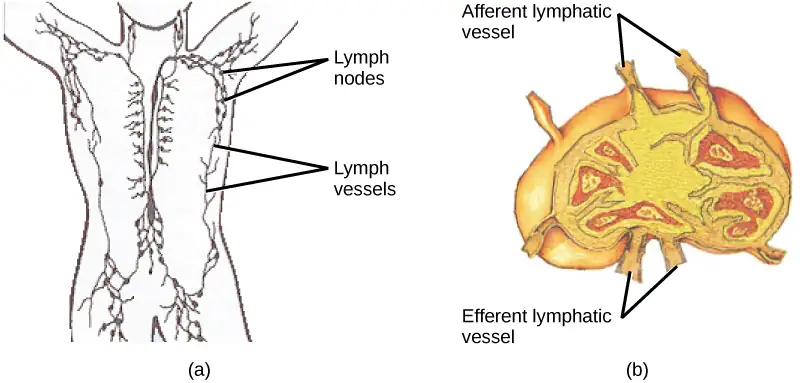
The spleen houses B and T cells, macrophages, dendritic cells, and NK cells. The spleen, shown in Figure 42.21, is the site where APCs that have trapped foreign particles in the blood can communicate with lymphocytes. Antibodies are synthesized and secreted by activated plasma cells in the spleen, and the spleen filters foreign substances and antibody-complexed pathogens from the blood. Functionally, the spleen is to the blood as lymph nodes are to the lymph.
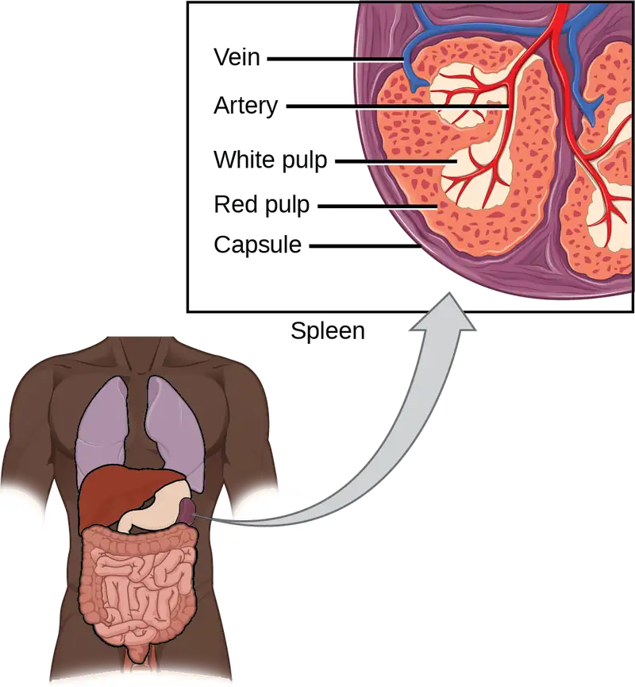
42.3 Antibodies¶
Learning Objectives
By the end of this section, you will be able to do the following:
- Explain cross-reactivity
- Describe the structure and function of antibodies
- Discuss antibody production
An antibody, also known as an immunoglobulin (Ig), is a protein that is produced by plasma cells after stimulation by an antigen. Antibodies are the functional basis of humoral immunity. Antibodies occur in the blood, in gastric and mucus secretions, and in breast milk. Antibodies in these bodily fluids can bind pathogens and mark them for destruction by phagocytes before they can infect cells.
Antibody Structure¶
An antibody molecule is comprised of four polypeptides: two identical heavy chains (large peptide units) that are partially bound to each other in a “Y” formation, which are flanked by two identical light chains (small peptide units), as illustrated in Figure 42.22. Bonds between the cysteine amino acids in the antibody molecule attach the polypeptides to each other. The areas where the antigen is recognized on the antibody are variable domains and the antibody base is composed of constant domains.
In germ-line B cells, the variable region of the light chain gene has 40 variable (V) and five joining (J) segments. An enzyme called DNA recombinase randomly excises most of these segments out of the gene, and splices one V segment to one J segment. During RNA processing, all but one V and J segment are spliced out. Recombination and splicing may result in over 106 possible VJ combinations. As a result, each differentiated B cell in the human body typically has a unique variable chain. The constant domain, which does not bind antibody, is the same for all antibodies.
![Part A shows the arrangement of gene segments encoding antibody light chains in a germ line B cell. The segment contains forty consecutive V regions, named V 1 through V 40, five consecutive J regions named J 1 through J 5, and a constant region. J5 and the constant region are separated by an intron. D N A recombinase splices out the portion of D N A containing segments V 3 through J 1, resulting in a differentiated B cell where the V 2 region is joined to the J 2 region. The gene is transcribed into pre R N A. R N A processing splices out all but the V 2, J 2 and C regions. Translation results in a protein with a variable region formed from the V 2 and J 2 segments, and a constant region formed from the C region. In part B, the light chain joins the heavy chain to form a Y shaped antibody.](img/figure-42-03-01.webp)
Similar to TCRs and BCRs, antibody diversity is produced by the mutation and recombination of approximately 300 different gene segments encoding the light and heavy chain variable domains in precursor cells that are destined to become B cells. The variable domains from the heavy and light chains interact to form the binding site through which an antibody can bind a specific epitope on an antigen. The numbers of repeated constant domains in Ig classes are the same for all antibodies corresponding to a specific class. Antibodies are structurally similar to the extracellular component of the BCRs, and B cell maturation to plasma cells can be visualized in simple terms as the cell acquires the ability to secrete the extracellular portion of its BCR in large quantities.
Antibody Classes¶
Antibodies can be divided into five classes—IgM, IgG, IgA, IgD, IgE—based on their physiochemical, structural, and immunological properties. IgGs, which make up about 80 percent of all antibodies in the serum, have heavy chains that consist of one variable domain and three identical constant domains. IgA and IgD also have three constant domains per heavy chain, whereas IgM and IgE each have four constant domains per heavy chain. The variable domain determines binding specificity and the constant domain of the heavy chain determines the immunological mechanism of action of the corresponding antibody class. It is possible for two antibodies to have the same binding specificities but be in different classes and, therefore, to be involved in different functions.
After an adaptive defense is produced against a pathogen, typically plasma cells first secrete IgM into the blood. BCRs on naïve B cells are of the IgM class and occasionally IgD class. IgM molecules make up approximately ten percent of all antibodies. Prior to antibody secretion, plasma cells assemble IgM molecules into pentamers (five individual antibodies) linked by a joining (J) chain, as shown in Figure 42.23. The pentamer arrangement means that these macromolecules can bind ten identical antigens. However, IgM molecules released early in the adaptive immune response do not bind to antigens as stably as IgGs, which are one of the possible types of antibodies secreted in large quantities upon reexposure to the same pathogen. Figure 42.23 summarizes the properties of immunoglobulins and illustrates their basic structures.
![Table shows the structure and function of the five types of immunoglobulins: upper case I lower case g upper case A, and upper I lower g upper D, and upper I lower g upper E, and upper I lower g upper G and upper I lower g upper M. I g D, and I g E and I g G all have a Y shaped structure. I g D is part of the B cell receptor, and activates basophils and mast cells. I g E protects against parasitic worms, and is responsible for allergic reactions. I g G is secreted by plasma cells in the blood, and is able to cross the placenta into the fetus. I g A consist of two Y shaped structures connected at their trunk. It is found in mucous, saliva, tears and breast milk, and protects against pathogens. I g M consists of five Y shaped structures connected to a pentagram, with the top of the Ys facing out. It may be attached to the surface of B cells or secreted in the blood, and is responsible for the early stages of immunity.](img/figure-42-03-02.webp)
IgAs populate the saliva, tears, breast milk, and mucus secretions of the gastrointestinal, respiratory, and genitourinary tracts. Collectively, these bodily fluids coat and protect the extensive mucosa (4000 square feet in humans). The total number of IgA molecules in these bodily secretions is greater than the number of IgG molecules in the blood serum. A small amount of IgA is also secreted into the serum in monomeric form. Conversely, some IgM is secreted into bodily fluids of the mucosa. Similar to IgM, IgA molecules are secreted as polymeric structures linked with a J chain. However, IgAs are secreted mostly as dimeric molecules, not pentamers.
IgE is present in the serum in small quantities and is best characterized in its role as an allergy mediator. IgD is also present in small quantities. Similar to IgM, BCRs of the IgD class are found on the surface of naïve B cells. This class supports antigen recognition and maturation of B cells to plasma cells.
Antibody Functions¶
Differentiated plasma cells are crucial players in the humoral response, and the antibodies they secrete are particularly significant against extracellular pathogens and toxins. Antibodies circulate freely and act independently of plasma cells. Antibodies can be transferred from one individual to another to temporarily protect against infectious disease. For instance, a person who has recently produced a successful immune response against a particular disease agent can donate blood to a nonimmune recipient and confer temporary immunity through antibodies in the donor’s blood serum. This phenomenon is called passive immunity; it also occurs naturally during breastfeeding, which makes breastfed infants highly resistant to infections during the first few months of life.
Antibodies coat extracellular pathogens and neutralize them, as illustrated in Figure 42.24, by blocking key sites on the pathogen that enhance their infectivity (such as receptors that “dock” pathogens on host cells). Antibody neutralization can prevent pathogens from entering and infecting host cells, as opposed to the CTL-mediated approach of killing cells that are already infected to prevent progression of an established infection. The neutralized antibody-coated pathogens can then be filtered by the spleen and eliminated in urine or feces.
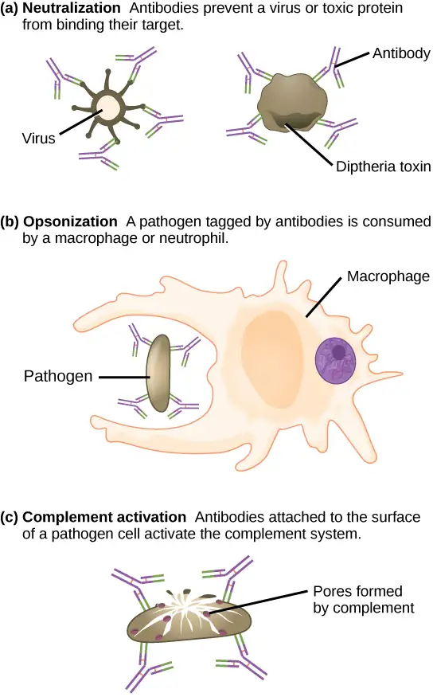
Antibodies also mark pathogens for destruction by phagocytic cells, such as macrophages or neutrophils, because phagocytic cells are highly attracted to macromolecules complexed with antibodies. Phagocytic enhancement by antibodies is called opsonization. In a process called complement fixation, IgM and IgG in serum bind to antigens and provide docking sites onto which sequential complement proteins can bind. The combination of antibodies and complement enhances opsonization even further and promotes rapid clearing of pathogens.
Affinity, Avidity, and Cross Reactivity¶
Not all antibodies bind with the same strength, specificity, and stability. In fact, antibodies exhibit different affinities (attraction) depending on the molecular complementarity between antigen and antibody molecules, as illustrated in Figure 42.25. An antibody with a higher affinity for a particular antigen would bind more strongly and stably, and thus would be expected to present a more challenging defense against the pathogen corresponding to the specific antigen.
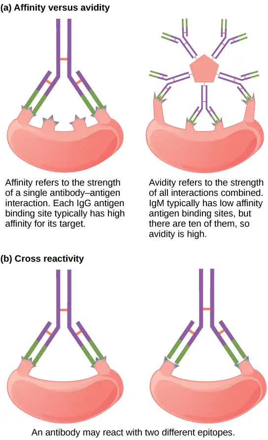
The term avidity describes binding by antibody classes that are secreted as joined, multivalent structures (such as IgM and IgA). Although avidity measures the strength of binding, just as affinity does, the avidity is not simply the sum of the affinities of the antibodies in a multimeric structure. The avidity depends on the number of identical binding sites on the antigen being detected, as well as other physical and chemical factors. Typically, multimeric antibodies, such as pentameric IgM, are classified as having lower affinity than monomeric antibodies, but high avidity. Essentially, the fact that multimeric antibodies can bind many antigens simultaneously balances their slightly lower binding strength for each antibody/antigen interaction.
Antibodies secreted after binding to one epitope on an antigen may exhibit cross reactivity for the same or similar epitopes on different antigens. Because an epitope corresponds to such a small region (the surface area of about four to six amino acids), it is possible for different macromolecules to exhibit the same molecular identities and orientations over short regions. Cross reactivity describes when an antibody binds not to the antigen that elicited its synthesis and secretion, but to a different antigen.
Cross reactivity can be beneficial if an individual develops immunity to several related pathogens despite having only been exposed to or vaccinated against one of them. For instance, antibody cross reactivity may occur against the similar surface structures of various Gram-negative bacteria. Conversely, antibodies raised against pathogenic molecular components that resemble self molecules may incorrectly mark host cells for destruction and cause autoimmune damage. Patients who develop systemic lupus erythematosus (SLE) commonly exhibit antibodies that react with their own DNA. These antibodies may have been initially raised against the nucleic acid of microorganisms but later cross-reacted with self-antigens. This phenomenon is also called molecular mimicry.
Antibodies of the Mucosal Immune System¶
Antibodies synthesized by the mucosal immune system include IgA and IgM. Activated B cells differentiate into mucosal plasma cells that synthesize and secrete dimeric IgA, and to a lesser extent, pentameric IgM. Secreted IgA is abundant in tears, saliva, breast milk, and in secretions of the gastrointestinal and respiratory tracts. Antibody secretion results in a local humoral response at epithelial surfaces and prevents infection of the mucosa by binding and neutralizing pathogens.
Antibodies in Detection and Measurement¶
The variety, specificity, and reliability of antibodies makes them ideally suited for certain medical tests and investigations. Radioimmunoassays (RIA), for example, rely on the antigen-antibody interaction to detect the presence and/or concentration of certain antigens. Developed by Rosalyn Sussman Yalow and Solomon Berson in the 1950s, the technique is known for extreme sensitivity, meaning that it can detect and measure very small quantities of a substance. It is used in narcotics detection, blood bank screening, early cancer screening, hormone measurement, and allergy diagnosis. Based on her significant contribution to medicine, Yalow received a Nobel Prize, making her the second woman to be awarded the prize for medicine.
The basic principle of radioimmunoassay is competitive binding, where a radioactive antigen competes with a non-radioactive antigen for a fixed number of antibody or receptor binding sites. First, an antigen is made radioactive (tagged), and then it is mixed with a known quantity of its specific antibody. When a sample. such as one from the patient's blood, is introduced, antibodies will cease binding to the tagged antigen and instead bind to the untagged one, a process called displacement. After several steps, the amount of newly unbound tagged antigen is measured to see how much displacement occurred, which indicates the presence and concentration of the antigen in the blood.
For example, to measure insulin levels, the first step is to mix known amounts of radioisotope-tagged insulin and antibodies. These combine chemically. Next, a small amount of the patient's blood is added. The insulin contained in the blood displaces some of the tagged insulin. The tagged insulin is then measured with isotope detectors, and the patient's insulin level is calculated.
42.4 Disruptions in the Immune System¶
Learning Objectives
By the end of this section, you will be able to do the following:
- Describe hypersensitivity
- Define autoimmunity
A functioning immune system is essential for survival, but even the sophisticated cellular and molecular defenses of the mammalian immune response can be defeated by pathogens at virtually every step. In the competition between immune protection and pathogen evasion, pathogens have the advantage of more rapid evolution because of their shorter generation time and other characteristics. For instance, Streptococcus pneumoniae (bacterium that cause pneumonia and meningitis) surrounds itself with a capsule that inhibits phagocytes from engulfing it and displaying antigens to the adaptive immune system. Staphylococcus aureus (bacterium that can cause skin infections, abscesses, and meningitis) synthesizes a toxin called leukocidin that kills phagocytes after they engulf the bacterium. Other pathogens can also hinder the adaptive immune system. HIV infects TH cells via their CD4 surface molecules, gradually depleting the number of TH cells in the body; this inhibits the adaptive immune system’s capacity to generate sufficient responses to infection or tumors. As a result, HIV-infected individuals often suffer from infections that would not cause illness in people with healthy immune systems but which can cause devastating illness to immune-compromised individuals. Maladaptive responses of immune cells and molecules themselves can also disrupt the proper functioning of the entire system, leading to host cell damage that could become fatal.
Immunodeficiency¶
Failures, insufficiencies, or delays at any level of the immune response can allow pathogens or tumor cells to gain a foothold and replicate or proliferate to high enough levels that the immune system becomes overwhelmed. Immunodeficiency is the failure, insufficiency, or delay in the response of the immune system, which may be acquired or inherited. Immunodeficiency can be acquired as a result of infection with certain pathogens (such as HIV), chemical exposure (including certain medical treatments), malnutrition, or possibly by extreme stress. For instance, radiation exposure can destroy populations of lymphocytes and elevate an individual’s susceptibility to infections and cancer. Dozens of genetic disorders result in immunodeficiencies, including Severe Combined Immunodeficiency (SCID), Bare lymphocyte syndrome, and MHC II deficiencies. Rarely, primary immunodeficiencies that are present from birth may occur. Neutropenia is one form in which the immune system produces a below-average number of neutrophils, the body’s most abundant phagocytes. As a result, bacterial infections may go unrestricted in the blood, causing serious complications.
Hypersensitivities¶
Maladaptive immune responses toward harmless foreign substances or self antigens that occur after tissue sensitization are termed hypersensitivities. The types of hypersensitivities include immediate, delayed, and autoimmunity. A large proportion of the population is affected by one or more types of hypersensitivity.
Allergies¶
The immune reaction that results from immediate hypersensitivities in which an antibody-mediated immune response occurs within minutes of exposure to a harmless antigen is called an allergy. In the United States, 20 percent of the population exhibits symptoms of allergy or asthma, whereas 55 percent test positive against one or more allergens. Upon initial exposure to a potential allergen, an allergic individual synthesizes antibodies of the IgE class via the typical process of APCs presenting processed antigen to TH cells that stimulate B cells to produce IgE. This class of antibodies also mediates the immune response to parasitic worms. The constant domain of the IgE molecules interact with mast cells embedded in connective tissues. This process primes, or sensitizes, the tissue. Upon subsequent exposure to the same allergen, IgE molecules on mast cells bind the antigen via their variable domains and stimulate the mast cell to release the modified amino acids histamine and serotonin; these chemical mediators then recruit eosinophils which mediate allergic responses. Figure 42.26 shows an example of an allergic response to ragweed pollen. The effects of an allergic reaction range from mild symptoms like sneezing and itchy, watery eyes to more severe or even life-threatening reactions involving intensely itchy welts or hives, airway contraction with severe respiratory distress, and plummeting blood pressure. This extreme reaction is known as anaphylactic shock. If not treated with epinephrine to counter the blood pressure and breathing effects, this condition can be fatal.
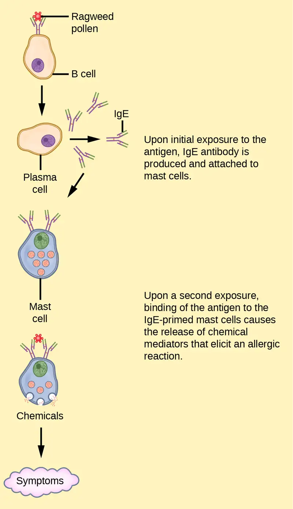
Delayed hypersensitivity is a cell-mediated immune response that takes approximately one to two days after secondary exposure for a maximal reaction to be observed. This type of hypersensitivity involves the TH1 cytokine-mediated inflammatory response and may manifest as local tissue lesions or contact dermatitis (rash or skin irritation). Delayed hypersensitivity occurs in some individuals in response to contact with certain types of jewelry or cosmetics. Delayed hypersensitivity facilitates the immune response to poison ivy and is also the reason why the skin test for tuberculosis results in a small region of inflammation on individuals who were previously exposed to Mycobacterium tuberculosis. That is also why cortisone is used to treat such responses: it will inhibit cytokine production.
Autoimmunity¶
Autoimmunity is a type of hypersensitivity to self antigens that affects approximately five percent of the population. Most types of autoimmunity involve the humoral immune response. Antibodies that inappropriately mark self components as foreign are termed autoantibodies. In patients with the autoimmune disease myasthenia gravis, muscle cell receptors that induce contraction in response to acetylcholine are targeted by antibodies. The result is muscle weakness that may include marked difficulty with fine and/or gross motor functions. In systemic lupus erythematosus, a diffuse autoantibody response to the individual’s own DNA and proteins results in various systemic diseases. As illustrated in Figure 42.27, systemic lupus erythematosus may affect the heart, joints, lungs, skin, kidneys, central nervous system, or other tissues, causing tissue damage via antibody binding, complement recruitment, lysis, and inflammation.
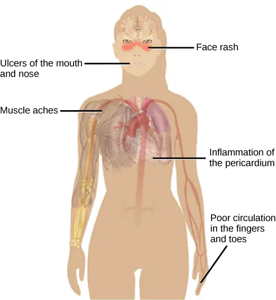
Autoimmunity can develop with time, and its causes may be rooted in molecular mimicry. Antibodies and TCRs may bind self antigens that are structurally similar to pathogen antigens, which the immune receptors first raised. As an example, infection with Streptococcus pyogenes (bacterium that causes strep throat) may generate antibodies or T cells that react with heart muscle, which has a similar structure to the surface of S. pyogenes. These antibodies can damage heart muscle with autoimmune attacks, leading to rheumatic fever. Insulin-dependent (Type 1) diabetes mellitus arises from a destructive inflammatory TH1 response against insulin-producing cells of the pancreas. Patients with this autoimmunity must be injected with insulin that originates from other sources.
Chapter Review¶
Key Terms¶
- adaptive immunity
- immunity that has memory and occurs after exposure to an antigen either from a pathogen or a vaccination
- affinity
- attraction of molecular complementarity between antigen and antibody molecules
- allergy
- immune reaction that results from immediate hypersensitivities in which an antibody-mediated immune response occurs within minutes of exposure to a harmless antigen
- antibody
- protein that is produced by plasma cells after stimulation by an antigen; also known as an immunoglobulin
- antigen
- foreign or “non-self” protein that triggers the immune response
- antigen-presenting cell (APC)
- immune cell that detects, engulfs, and informs the adaptive immune response about an infection by presenting the processed antigen on the cell surface
- autoantibody
- antibody that incorrectly marks “self” components as foreign and stimulates the immune response
- autoimmune response
- inappropriate immune response to host cells or self-antigens
- autoimmunity
- type of hypersensitivity to self antigens
- avidity
- total binding strength of a multivalent antibody with antigen
- B cell
- lymphocyte that matures in the bone marrow and differentiates into antibody-secreting plasma cells
- basophil
- leukocyte that releases chemicals usually involved in the inflammatory response
- cell-mediated immune response
- adaptive immune response that is carried out by T cells
- clonal selection
- activation of B cells corresponding to one specific BCR variant and the dramatic proliferation of that variant
- complement system
- array of approximately 20 soluble proteins of the innate immune system that enhance phagocytosis, bore holes in pathogens, and recruit lymphocytes; enhances the adaptive response when antibodies are produced
- cross reactivity
- binding of an antibody to an epitope corresponding to an antigen that is different from the one the antibody was raised against
- cytokine
- chemical messenger that regulates cell differentiation, proliferation, gene expression, and cell trafficking to effect immune responses
- cytotoxic T lymphocyte (CTL)
- adaptive immune cell that directly kills infected cells via perforin and granzymes, and releases cytokines to enhance the immune response
- dendritic cell
- immune cell that processes antigen material and presents it on the surface of other cells to induce an immune response
- effector cell
- lymphocyte that has differentiated, such as a B cell, plasma cell, or cytotoxic T lymphocyte
- eosinophil
- leukocyte that responds to parasites and is involved in the allergic response
- epitope
- small component of an antigen that is specifically recognized by antibodies, B cells, and T cells; the antigenic determinant
- granzyme
- protease that enters target cells through perforin and induces apoptosis in the target cells; used by NK cells and killer T cells
- helper T lymphocyte (TH)
- cell of the adaptive immune system that binds APCs via MHC II molecules and stimulates B cells or secretes cytokines to initiate the immune response
- host
- an organism that is invaded by a pathogen or parasite
- humoral immune response
- adaptive immune response that is controlled by activated B cells and antibodies
- hypersensitivities
- spectrum of maladaptive immune responses toward harmless foreign particles or self antigens; occurs after tissue sensitization and includes immediate-type (allergy), delayed-type, and autoimmunity
- immune tolerance
- acquired ability to prevent an unnecessary or harmful immune response to a detected foreign body known not to cause disease or to self-antigens
- immunodeficiency
- failure, insufficiency, or delay at any level of the immune system, which may be acquired or inherited
- inflammation
- localized redness, swelling, heat, and pain that results from the movement of leukocytes and fluid through opened capillaries to a site of infection
- innate immunity
- immunity that occurs naturally because of genetic factors or physiology, and is not induced by infection or vaccination
- interferon
- cytokine that inhibits viral replication and modulates the immune response
- lymph
- watery fluid that bathes tissues and organs with protective white blood cells and does not contain erythrocytes
- lymphocyte
- leukocyte that is histologically identifiable by its large nuclei; it is a small cell with very little cytoplasm
- macrophage
- large phagocytic cell that engulfs foreign particles and pathogens
- major histocompatibility complex (MHC) I/II molecule
- protein found on the surface of all nucleated cells (I) or specifically on antigen-presenting cells (II) that signals to immune cells whether the cell is healthy/normal or is infected/cancerous; it provides the appropriate template into which antigens can be loaded for recognition by lymphocytes
- mast cell
- leukocyte that produces inflammatory molecules, such as histamine, in response to large pathogens and allergens
- memory cell
- antigen-specific B or T lymphocyte that does not differentiate into effector cells during the primary immune response but that can immediately become an effector cell upon reexposure to the same pathogen
- monocyte
- type of white blood cell that circulates in the blood and lymph and differentiates into macrophages after it moves into infected tissue
- mucosa-associated lymphoid tissue (MALT)
- collection of lymphatic tissue that combines with epithelial tissue lining the mucosa throughout the body
- natural killer (NK) cell
- lymphocyte that can kill cells infected with viruses or tumor cells
- neutrophil
- phagocytic leukocyte that engulfs and digests pathogens
- opsonization
- process that enhances phagocytosis using proteins to indicate the presence of a pathogen to phagocytic cells
- passive immunity
- transfer of antibodies from one individual to another to provide temporary protection against pathogens
- pathogen
- an agent, usually a microorganism, that causes disease in the organisms that it invades
- pathogen-associated molecular pattern (PAMP)
- carbohydrate, polypeptide, and nucleic acid “signature” that is expressed by viruses, bacteria, and parasites but differs from molecules on host cells
- pattern recognition receptor (PRR)
- molecule on macrophages and dendritic cells that binds molecular signatures of pathogens and promotes pathogen engulfment and destruction
- perforin
- destructive protein that creates a pore in the target cell; used by NK cells and killer T cells
- plasma cell
- immune cell that secrets antibodies; these cells arise from B cells that were stimulated by antigens
- regulatory T (Treg) cell
- specialized lymphocyte that suppresses local inflammation and inhibits the secretion of cytokines, antibodies, and other stimulatory immune factors; involved in immune tolerance
- T cell
- lymphocyte that matures in the thymus gland; one of the main cells involved in the adaptive immune system
Summary¶
42.1 Innate Immune Response¶
The innate immune system serves as a first responder to pathogenic threats that bypass natural physical and chemical barriers of the body. Using a combination of cellular and molecular attacks, the innate immune system identifies the nature of a pathogen and responds with inflammation, phagocytosis, cytokine release, destruction by NK cells, and/or a complement system. When innate mechanisms are insufficient to clear an infection, the adaptive immune response is informed and mobilized.
42.2 Adaptive Immune Response¶
The adaptive immune response is a slower-acting, longer-lasting, and more specific response than the innate response. However, the adaptive response requires information from the innate immune system to function. APCs display antigens via MHC molecules to complementary naïve T cells. In response, the T cells differentiate and proliferate, becoming TH cells or CTLs. TH cells stimulate B cells that have engulfed and presented pathogen-derived antigens. B cells differentiate into plasma cells that secrete antibodies, whereas CTLs induce apoptosis in intracellularly infected or cancerous cells. Memory cells persist after a primary exposure to a pathogen. If reexposure occurs, memory cells differentiate into effector cells without input from the innate immune system. The mucosal immune system is largely independent from the systemic immune system but functions in a parallel fashion to protect the extensive mucosal surfaces of the body.
42.3 Antibodies¶
Antibodies (immunoglobulins) are the molecules secreted from plasma cells that mediate the humoral immune response. There are five antibody classes; an antibody's class determines its mechanism of action and production site but does not control its binding specificity. Antibodies bind antigens via variable domains and can either neutralize pathogens or mark them for phagocytosis or activate the complement cascade.
42.4 Disruptions in the Immune System¶
Immune disruptions may involve insufficient immune responses or inappropriate immune targets. Immunodeficiency increases an individual's susceptibility to infections and cancers. Hypersensitivities are misdirected responses either to harmless foreign particles, as in the case of allergies, or to host factors, as in the case of autoimmunity. Reactions to self components may be the result of molecular mimicry.
Review Questions¶
42.1 Innate Immune Response¶
1. Which of the following is a barrier against pathogens provided by the skin?
- high pH
- mucus
- tears
- desiccation
Answer
D
2. Although interferons have several effects, they are particularly useful against infections with which type of pathogen?
- bacteria
- viruses
- fungi
- helminths
Answer
B
3. Which organelle do phagocytes use to digest engulfed particles?
- lysosome
- nucleus
- endoplasmic reticulum
- mitochondria
Answer
A
4. Which innate immune system component uses MHC I molecules directly in its defense strategy?
- macrophages
- neutrophils
- NK cells
- interferon
Answer
C
42.2 Adaptive Immune Response¶
5. Which of the following is both a phagocyte and an antigen-presenting cell?
- NK cell
- eosinophil
- neutrophil
- macrophage
Answer
D
6. Which immune cells bind MHC molecules on APCs via CD8 coreceptors on their cell surfaces?
- TH cells
- CTLs
- mast cells
- basophils
Answer
B
7. What “self” pattern is identified by NK cells?
- altered self
- missing self
- normal self
- non-self
Answer
B
8. The acquired ability to prevent an unnecessary or destructive immune reaction to a harmless foreign particle, such as a food protein, is called ________.
- the TH2 response
- allergy
- immune tolerance
- autoimmunity
Answer
C
9. Upon reexposure to a pathogen, a memory B cell can differentiate to which cell type?
- CTL
- naïve B cell
- memory T cell
- plasma cell
Answer
D
10. Foreign particles circulating in the blood are filtered by the ________.
- spleen
- lymph nodes
- MALT
- lymph
Answer
A
42.3 Antibodies¶
11. The structure of an antibody is similar to the extracellular component of which receptor?
- MHC I
- MHC II
- BCR
- none of the above
Answer
C
12. The first antibody class to appear in the serum in response to a newly encountered pathogen is ________.
- IgM
- IgA
- IgG
- IgE
Answer
A
13. What is the most abundant antibody class detected in the serum upon reexposure to a pathogen or in reaction to a vaccine?
- IgM
- IgA
- IgG
- IgE
Answer
C
14. Breastfed infants typically are resistant to disease because of ________.
- active immunity
- passive immunity
- immune tolerance
- immune memory
Answer
B
42.4 Disruptions in the Immune System¶
15. Allergy to pollen is classified as:
- an autoimmune reaction
- immunodeficiency
- delayed hypersensitivity
- immediate hypersensitivity
Answer
D
16. A potential cause of acquired autoimmunity is ________.
- tissue hypersensitivity
- molecular mimicry
- histamine release
- radiation exposure
Answer
B
17. Autoantibodies are probably involved in:
- reactions to poison ivy
- pollen allergies
- systemic lupus erythematosus
- HIV/AIDS
Answer
C
18. Which of the following diseases is not due to autoimmunity?
- rheumatic fever
- systemic lupus erythematosus
- diabetes mellitus
- HIV/AIDS
Answer
D
Critical Thinking Questions¶
42.1 Innate Immune Response¶
19. Different MHC I molecules between donor and recipient cells can lead to rejection of a transplanted organ or tissue. Suggest a reason for this.
Answer
If the MHC I molecules expressed on donor cells differ from the MHC I molecules expressed on recipient cells, NK cells may identify the donor cells as “non-self” and produce perforin and granzymes to induce the donor cells to undergo apoptosis, which would destroy the transplanted organ.
20. If a series of genetic mutations prevented some, but not all, of the complement proteins from binding antibodies or pathogens, would the entire complement system be compromised?
Answer
The entire complement system would probably be affected even when only a few members were mutated such that they could no longer bind. Because the complement involves the binding of activated proteins in a specific sequence, when one or more proteins in the sequence are absent, the subsequent proteins would be incapable of binding to elicit the complement’s pathogen-destructive effects.
42.2 Adaptive Immune Response¶
21. Explain the difference between an epitope and an antigen.
Answer
An antigen is a molecule that reacts with some component of the immune response (antibody, B cell receptor, T cell receptor). An epitope is the region on the antigen through which binding with the immune component actually occurs.
22. What is a naïve B or T cell?
Answer
A naïve T or B cell is one that has not been activated by binding to the appropriate epitope. Naïve T and B cells cannot produce responses.
23. How does the TH1 response differ from the TH2 response?
Answer
The TH1 response involves the secretion of cytokines to stimulate macrophages and CTLs and improve their destruction of intracellular pathogens and tumor cells. It is associated with inflammation. The TH2 response is involved in the stimulation of B cells into plasma cells that synthesize and secrete antibodies.
24. In mammalian adaptive immune systems, T cell receptors are extraordinarily diverse. What function of the immune system results from this diversity, and how is this diversity achieved?
Answer
The diversity of TCRs allows the immune system to have millions of different T cells, and thereby to be specific in distinguishing antigens. This diversity arises from mutation and recombination in the genes that encode the variable regions of TCRs.
25. How do B and T cells differ with respect to antigens that they bind?
Answer
T cells bind antigens that have been digested and embedded in MHC molecules by APCs. In contrast, B cells function themselves as APCs to bind intact, unprocessed antigens.
26. Why is the immune response after reinfection much faster than the adaptive immune response after the initial infection?
Answer
Upon reinfection, the memory cells will immediately differentiate into plasma cells and CTLs without input from APCs or TH cells. In contrast, the adaptive immune response to the initial infection requires time for naïve B and T cells with the appropriate antigen specificities to be identified and activated.
42.3 Antibodies¶
27. What are the benefits and costs of antibody cross reactivity?
Answer
Cross reactivity of antibodies can be beneficial when it allows an individual's immune system to respond to an array of similar pathogens after being exposed to just one of them. A potential cost of cross reactivity is an antibody response to parts of the body (self) in addition to the appropriate antigen.
Visual Connection Questions¶
28. Figure 42.11 Which of the following statements about T cells is false?
- Helper T cells release cytokines while cytotoxic T cells kill the infected cell.
- Helper T cells are CD4+, while cytotoxic T cells are CD8+.
- MHC II is a receptor found on most body cells, while MHC I is a receptor found on immune cells only.
- The T cell receptor is found on both CD4+ and CD8+ T cells.
Answer
29. Figure 42.14 Based on what you know about MHC receptors, why do you think an organ transplanted from an incompatible donor to a recipient will be rejected?
Answer
Figure 42.14 MHC receptors differ from person to person. Thus, MHC receptors on an incompatible donor are considered “non-self” and are rejected by the immune system.
30. Figure 42.16 The Rh antigen is found on Rh-positive red blood cells. During pregnancy, Rh-negative people can usually carry an Rh-positive fetus to term without difficulty. However, a second Rh-positive fetus may trigger an immune attack that causes hemolytic disease of the newborn. Why do you think hemolytic disease is only a problem during the second or subsequent pregnancies?
Answer
Figure 42.16 If the blood of the mother and fetus mixes, memory cells that recognize the Rh antigen can form late in the first pregnancy. During subsequent pregnancies, these memory cells launch an immune attack on the fetal blood cells. Injection of anti-Rh antibody during the first pregnancy prevents the immune response from occurring.
Adapted from Biology 2e by OpenStax, licensed under CC BY 4.0. Access the original for free at openstax.org. Changes: converted to the web reading format of The Open Book Project.